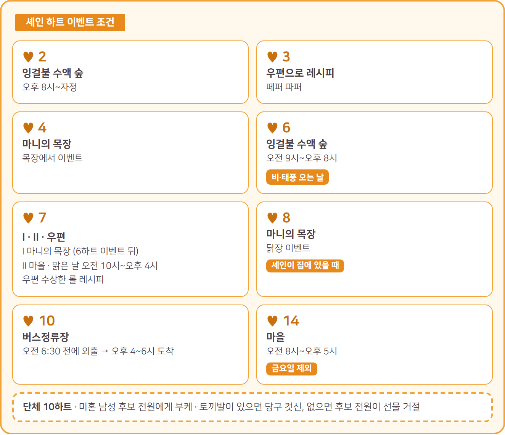
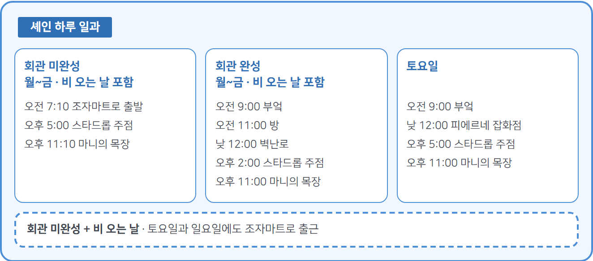
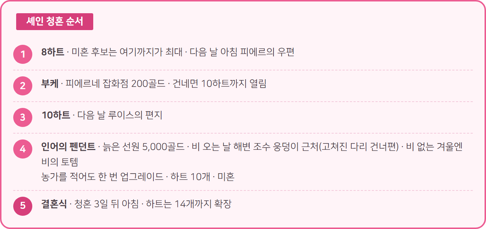

스타듀밸리 셰인 호감도 공략, 선물 표와 결혼 준비 순서
스타듀 밸리의 셰인은 생일이 봄 20일이고 맥주·매운 고추·페퍼 파퍼·피자를 사랑하는데요. 달걀은 좋아하지만 공허의 달걀은 빠지고, 피클은 혐오하는 선물이라 잘못 건네면 점수가 크게 깎입니다. 셰인을 처음 올리는 분이 선물부터 청혼까지 이 글 하나로 따라갈 수 있게 순서대로 모았습니다.
셰인 프로필 화면 — 생일 봄 20일
셰인에게 처음 건넬 선물은 〔맥주 / 피자 / 페퍼 파퍼〕로 정했어요.
셰인 기본 정보
셰인은 마니의 목장에서 재스와 함께 사는 결혼 가능한 12명 중 한 명입니다. 보통 낮에는 조자마트에서 일하고 저녁은 스타드롭 주점에서 보내는데요, 마을 회관을 완성하면 조자마트 일자리를 잃어서 평일 일정이 달라집니다.
| 항목 | 내용 |
|---|---|
| 생일 | 봄 20일 |
| 사는 곳 | 마니의 목장 |
| 낮 | 근무 오전 9시~오후 5시 조자마트 |
| 저녁 | 스타드롭 주점 |
출처: 스타듀 밸리 위키(한국어)
셰인 선물 취향 표, 사랑함부터 혐오함까지
셰인이 사랑하는 선물은 아홉 가지이고, 피클과 석영은 혐오합니다. 표는 위에서 아래로 사랑함부터 혐오함까지 내려가니, 선물을 고를 땐 맨 윗줄부터 보시면 되겠습니다.
| 취향 | 평일 | 생일 | 아이템 |
|---|---|---|---|
| 사랑함 | +80 | +640 | 맥주 · 매운 고추 · 페퍼 파퍼 · 피자 · 황금 호박 · 마법 얼음사탕 · 진주 · 무지갯빛 파편 · 토끼발 |
| 좋아함 | +45 | +360 | 달걀 전부(공허의 달걀 제외) · 과일 전부(매운 고추 제외) · 대체로 장인 제작품(피클 제외) · 요리 · 꽃 · 채집 광물 · 과일 나무 열매 · 보석 · 야채 · 생명의 영약 · 메이플 시럽 · 피나콜라다, 예외로 야채 중 홉·밀·찻잎은 괜찮음, 채집 광물 중 석영은 혐오함, 장인 제작품 중 기름은 싫어함, 요리 중 빵·계란 프라이·수상한 롤은 괜찮음 |
| 괜찮음 | +20 | +160 | 우유 전부 · 수상한 롤 · 빵 · 산호 · 오리깃털 · 계란 프라이 · 홉 · 앵무조개 껍데기 · 어란 · 오징어 먹물 · 달콤보석베리 · 찻잎 · 송로버섯 · 밀 · 양털 |
| 싫어함 | -20 | -160 | 살구버섯 · 흔한 버섯 · 수선화 · 민들레 · 생강 · 헤이즐넛 · 호랑가시나무 열매 · 리크 · 마그마 버섯 · 곰보버섯 · 보라색 버섯 · 해초 · 눈마 · 야생 고추냉이 · 겨울뿌리, 공통 항목으로는 건물 자재 · 폭탄 · 울타리 · 비료 · 씨앗 · 스프링클러 · 낚시도구 · 쌀 · 기름 · 식초 · 밀가루 · 공허의 달걀 |
| 혐오함 | -40 | -320 | 피클 · 석영, 공통 항목으로는 미끼 · 몬스터 전리품(태양 정수·공허 정수 제외) · 쓰레기(유목 제외) · 잉어 · 달팽이 · 구리광석 · 철광석 · 건초 · 설탕 · 횃불 · 성게 |
출처: 스타듀 밸리 위키(한국어) 셰인·우정
생일에는 효과가 8배라 사랑함이 +640까지 올라가는데요. 은별은 ×1.1, 금별은 ×1.25, 이리듐은 ×1.5가 붙는 품질 배율은 사랑함과 좋아함에만 적용됩니다. 선물은 하루 한 개씩 일주일에 두 번까지이고, 두 번을 다 줬어도 생일 선물은 따로 줄 수 있습니다. 표의 공통 항목은 일부만 실었으니 전체는 선물을 줄 때 나오는 반응으로 한 번 확인해 보세요.
| 영화 | 작품 |
|---|---|
| 사랑함 | 빗속의 울부짖음 · 웜버스 |
| 좋아함 | 대초원의 왕의 여정: 극장판 · 미스테리움 · 자연의 신비: 생기 넘치는 세상의 탐험 |
| 싫어함 | 용감한 작고 어린 나무 · 주주 시티 급행열차 · 콜드스타 목장의 기적 |
출처: 스타듀 밸리 위키(한국어) 셰인
셰인 하트 이벤트 조건, 2하트부터 14하트까지
셰인의 하트 이벤트는 2하트부터 14하트까지 이어지고, 8하트는 셰인이 집에 있을 때, 14하트는 금요일을 뺀 날처럼 하트마다 조건이 다릅니다.

셰인 하트 이벤트 조건 카드 — 2하트부터 14하트까지
| 하트 | 조건 |
|---|---|
| 2하트 | 오후 8시~자정, 마니의 목장이 있는 잉걸불 수액 숲 |
| 3하트 | 우편으로 레시피가 오고 그 레시피는 페퍼 파퍼 |
| 4하트 | 마니의 목장 |
| 6하트 | 비나 태풍이 오는 날 오전 9시~오후 8시, 잉걸불 수액 숲, 이튿날 사과하는 선택지 중 하나만 우정 -10 |
| 7하트 I | 6하트 이벤트를 본 뒤 마니의 목장 |
| 7하트 II | 맑은 날 오전 10시~오후 4시 마을, 에밀리와 클린트 호감도 2 이상 |
| 7하트 우편 | 요리 레시피 수상한 롤 |
| 8하트 | 셰인이 집에 있을 때 마니의 목장, 닭장이 나옴 |
| 10하트 | 오전 6:30 이전에 집 밖으로 나가 이벤트를 본 뒤 오후 4시~6시 버스정류장, 두 선택지 모두 우정에 영향 없음 |
| 14하트 | 금요일이 아닌 날 오전 8시~오후 5시 마을, 2부·3부는 다음 날부터, 선택지는 우정에 영향 없음 |
출처: 스타듀 밸리 위키(한국어) 셰인
8하트 이벤트는 셰인이 집에 있을 때 마니의 목장에서 볼 수 있는데요, 닭장이 나오는 장면입니다.
8하트 이벤트 닭장 장면
단체 10하트는 결혼하지 않은 상태에서 미혼 남성 후보 모두에게 부케를 건네고 하트 10개를 채우면 발생합니다. 토끼발이 있으면 당구 컷신이 나오고, 없으면 후보 전원이 약 일주일 동안 선물을 거절합니다. 세이브 파일당 한 번뿐이라 토끼발을 챙기고 들어가는 쪽이 낫습니다.
단체 10하트 당구 컷신 앞부분
셰인 일정과 만나는 곳
셰인의 평일 일정은 마을 회관을 고쳤는지에 따라 갈리는데요, 만나는 시간대는 아래에서 확인하시면 되겠습니다.

셰인 일과 카드 — 네 계절 모두 같은 표
| 언제 | 어디 |
|---|---|
| 월~금, 회관 미완성(비 오는 날 포함) | 오전 7:10 조자마트로 출발 → 오후 5:00 스타드롭 주점 → 오후 11:10 마니의 목장 |
| 월~금, 회관 완성(비 오는 날 포함) | 오전 9:00 부엌 → 오전 11:00 방 → 낮 12:00 벽난로 → 오후 2:00 스타드롭 주점 → 오후 11:00 마니의 목장 |
| 토요일 | 오전 9:00 부엌 → 낮 12:00 피에르네 잡화점 → 오후 5:00 스타드롭 주점 → 오후 11:00 마니의 목장 |
| 비 오는 날 + 회관 미완성 | 토요일과 일요일에도 조자마트 |
출처: 스타듀 밸리 위키(한국어) 셰인 · 봄·여름·가을·겨울 표가 같음
셰인 청혼 순서와 결혼 후 생활
셰인에게 청혼하려면 8하트에서 부케를 건네 10하트까지 연 다음, 인어의 펜던트를 구해 건네시면 됩니다.

셰인 청혼 순서 카드 — 한국어 위키 결혼 2026년 3월 5일 편집본
| 순서 | 할 일 | 조건과 값 |
|---|---|---|
| 1 | 8하트 | 미혼 후보는 8하트가 최대이고, 다음 날 아침 피에르가 부케를 알리는 우편을 보냄 |
| 2 | 부케 | 피에르네 잡화점 200골드, 건네면 10하트까지 열림 |
| 3 | 10하트 | 다음 날 루이스가 인어의 펜던트를 알리는 편지를 보냄 |
| 4 | 인어의 펜던트 | 늙은 선원 5,000골드, 비 오는 날 해변 조수 웅덩이 근처(고쳐진 다리 건너편), 비 없는 겨울엔 비의 토템 · 농가를 적어도 한 번 업그레이드하고 하트 10개를 채운 미혼 상태 |
| 5 | 결혼식 | 청혼 3일 뒤 아침, 축제·야시장·녹색 비와 겹치면 이벤트 없는 날로 미뤄지고 결혼 뒤 하트는 14개까지 확장 |
출처: 스타듀 밸리 위키(한국어) 결혼
결혼하면 셰인은 농가 침실 오른쪽 방에서 지내고, 농장 건물 뒤에는 닭 찰리와 함께하는 닭장이 생깁니다. 월요일과 금요일을 빼면 농장을 떠나지 않고 토요일 아침에는 닭장에서 시간을 보내며, 비 오는 날에는 맥주·큰 달걀·페일 에일·공허의 달걀·페퍼 파퍼를, 하루 종일 집에 있는 날에는 오믈렛·페퍼 파퍼·피자를 종종 선물해 줍니다.
결혼 뒤 농장 건물 뒤 닭장
청혼 준비는 〔부케부터 / 펜던트 비용부터 / 하트부터〕 챙기려고 해요.
자주 묻는 질문
Q. 대화를 안 하면 하트가 줄어드나요?
하트를 최대로 채우지 않았다면 대화하지 않은 날마다 우정이 조금씩 줄어드는데요, 부케를 건넨 뒤에는 더 크게 줄고 결혼한 뒤에는 감소가 아예 멈추지 않으니 틈틈이 말을 걸어 두시는 게 좋습니다.
Q. 일주일 선물을 다 주면 좋은 점이 있나요?
선물 횟수는 일요일에 초기화되는데요, 한 주에 두 번을 다 주면 일요일 아침에 우정이 조금 더 오르니 챙겨 두시면 좋습니다.
Q. 시들은 부케를 주면 어떻게 되나요?
연애가 끝나고 하트가 5로 떨어지는데요, 연애를 끝낼 생각이 아니라면 건네지 않는 게 좋습니다.
Q. 셰인이 먼저 선물을 보내기도 하나요?
하트가 1 이상이면 선물이 동봉된 편지가 올 수 있는데요, 동봉되는 아이템은 피자와 페퍼 파퍼입니다. 호감도가 오를수록 편지를 받을 확률도 높아지니 기대해 보셔도 좋겠습니다.
Q. 8하트 이벤트 뒤에 닭을 들이면 달라지나요?
마니에게서 산 닭이나 인큐베이터에서 부화시킨 닭이 1/4 확률로 파란 닭이 되는데요, 겉모습 말고는 일반 닭과 차이가 없습니다.
저라면 평일엔 사랑 선물로 일주일 두 번을 채우고, 맥주나 피자 한 개는 봄 20일 생일용으로 남겨 두겠습니다.
✔ 스타듀 밸리 같이 보기 좋은 내용
· 스타듀밸리 샘 호감도 공략, 선물 취향표와 하트 이벤트 조건 총정리
· 스타듀밸리 세바스찬 호감도 공략 선물표와 하트 이벤트 조건
· 스타듀밸리 알렉스 호감도 공략 선물 하트 이벤트 조건 총정리
참고한 곳
· 스타듀 밸리 위키(한국어) 셰인
· 스타듀 밸리 위키(한국어) 우정
· 스타듀 밸리 위키(한국어) 결혼